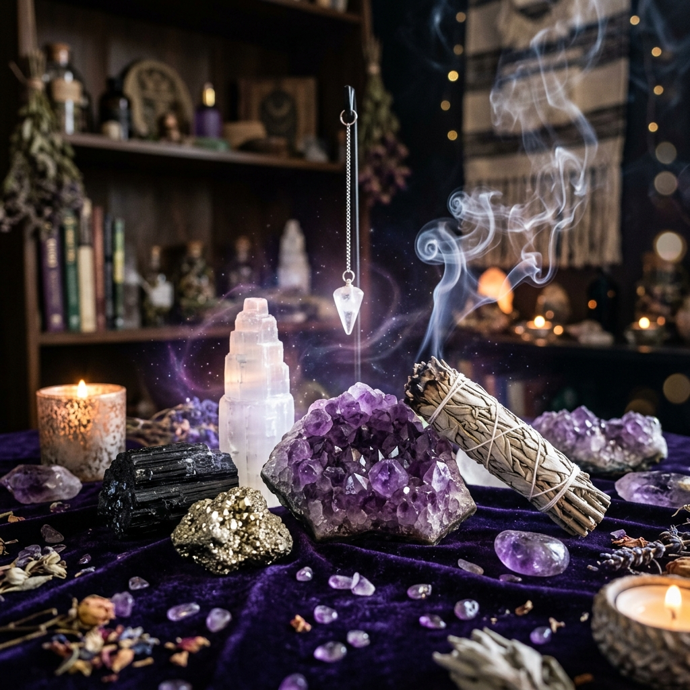

Desde tiempos inmemoriales, las civilizaciones más antiguas —desde los sabios del antiguo Egipto y los alquimistas medievales hasta las culturas chamánicas americanas— han venerado a los minerales no solo por su indudable belleza física, sino por sus excepcionales propiedades energéticas. En el plano de la sanación vibracional, la Gemoterapia es la disciplina mística y terapéutica que utiliza la frecuencia energética de las piedras y cristales para restaurar la armonía en nuestros cuerpos físico, mental, emocional y espiritual.

Cada gema posee una estructura cristalina molecular perfecta y estable que, a diferencia de la fluctuante energía humana, vibra siempre a una frecuencia constante. Al entrar en contacto con nuestro campo electromagnético (el aura), los cristales actúan por resonancia, absorbiendo, canalizando o amplificando las energías del entorno. Sin embargo, para que un cristal actúe como un verdadero aliado energético, es fundamental saber interactuar con él. En esta guía te enseñaremos detalladamente las tres fases del trabajo con cristales: limpiar, cargar y programar.
Fase 1: La Limpieza Energética (Purificación)
Cuando adquieres un cristal o después de utilizarlo en una sesión de meditación o tras una jornada tensa, este actúa como una esponja absorbiendo la densidad energética a su alrededor. Por ello, la limpieza es crucial para devolver al cristal su vibración neutra original. Existen diversos métodos de limpieza, y debes elegir el adecuado según la dureza y composición química de tu gema:
1. El Baño de Humo Sagrado (Sahumerio) - Apto para TODOS los cristales
Es el método más seguro, tradicional y respetuoso con la materia del mineral. Consiste en encender un atado de Salvia Blanca, hojas de romero o una madera de Palo Santo.
- Procedimiento: Pasa tu gema repetidamente a través de la corriente de humo aromático que emite el sahumerio durante aproximadamente un minuto, visualizando cómo la densidad acumulada se desprende y disuelve en el aire. Es el idóneo para piedras porosas o blandas como la selenita, la malaquita o la pirita, que podrían dañarse con el agua.
2. El Agua Corriente y la Sal Marina - Solo para cristales duros y no solubles
La sal es un neutralizador energético por excelencia y el agua limpia las vibraciones residuales al instante.
- Procedimiento: Coloca tus cristales en un recipiente de vidrio (nunca de metal) con agua templada y una cucharada de sal marina durante unas 2 a 3 horas. Al retirarlos, enjuágalos bajo el grifo de agua corriente.
- ⚠️ ADVERTENCIA CRÍTICA: Jamás uses este método con gemas blandas o con alto contenido de metales (hierro, cobre). Minerales como la Selenita (se disuelve en agua), la Malaquita (puede volverse tóxica al humedecerse) o la Pirita (se oxida por el hierro) deben mantenerse estrictamente secos.
3. Purificación con Selenita o Drusas de Cuarzo
La selenita y el cuarzo transparente poseen una vibración tan alta y pura que no acumulan negatividad y tienen la propiedad única de limpiar a otros minerales por proximidad.
- Procedimiento: Simplemente reposa tus piedras sobre una barra o plato de selenita, o en el interior de una drusa o geoda de amatista durante toda la noche. Las gemas se purificarán de forma pasiva y sin riesgo alguno de desgaste físico.
Fase 2: La Carga Energética (Vitalización)
Una vez que el cristal está limpio de interferencias, se encuentra en un estado pasivo y receptivo. Para devolverle su vitalidad y activar su fuerza activa de transmutación, debemos exponerlo a fuentes naturales de luz y magnetismo elemental:
- El Baño de Luz Lunar (Poder Intuitivo y Femenino): Coloca tus cristales en una ventana o directamente en el exterior bajo el influjo de la Luna Llena o Creciente durante toda la noche. Esta energía es suave, magnética y espiritual, ideal para piedras como la Piedra Luna, la Amatista, el Cuarzo Rosa y la Labradorita.
- El Baño de Luz Solar (Fuerza Vital y Acción Directa): Expón tus cristales al sol directo durante el amanecer o las primeras horas de la mañana por un máximo de 2 horas. El sol aporta una vibración cálida de éxito, abundancia y vitalidad, excelente para la Pirita, el Ojo de Tigre, el Citrino y la Cornalina. *(Nota: Evita exponer la Amatista y el Cuarzo Rosa al sol intenso, ya que la radiación prolongada decolora sus hermosos tonos).*
- El Retorno a la Madre Tierra (Arraigo y Estabilidad): Entierra tus cristales en una maceta con tierra fértil o directamente en tu jardín durante un ciclo completo de 24 horas. La energía telúrica limpia y descarga el magnetismo estático del mineral, devolviéndole su fuerza de enraizamiento. Ideal para el Jaspe Rojo, la Obsidiana y la Turmalina Negra.
Fase 3: La Programación (Consagración e Intención)
Este es el paso que la mayoría de las personas olvida, pero es el más importante. Programar un cristal significa sintonizar su vibración estable con tu voluntad mental y espiritual para un propósito concreto. Los cristales actúan como 'computadoras energéticas': graban la intención que les confías y la emiten de forma constante a tu aura.
Paso a paso para programar tu cristal:
- Toma el cristal limpio y cargado con tu mano dominante (con la que escribes, que es la mano proyectora de energía) y llévalo al centro de tu pecho, a la altura del corazón.
- Cierra los ojos, respira profundamente tres veces y enfoca tu mente de forma exclusiva en el propósito que deseas otorgar al mineral. Debe ser un objetivo claro y constructivo. Por ejemplo: *'Protección energética personal'*, *'Apertura mental al estudio'*, o *'Paz interior y calma en momentos de ansiedad'*.
- Visualiza cómo un haz de luz dorada desciende desde tu mente y tu corazón, envolviendo al cristal en tu mano. Con voz firme o mentalmente, pronuncia la fórmula de consagración:
“Consagro esta piedra para que me acompañe en mi propósito de [menciona tu meta]. Que su energía resuene en luz, amor y armonía para el mayor bien de todos. Gracias.” - A partir de ese instante, mantén el cristal cerca de ti: llévalo en el bolso, colócalo bajo la almohada o manténlo sobre tu mesa de trabajo para que interactúe de forma ininterrumpida con tu campo energético.
Breve diccionario de cristales imprescindibles para iniciar tu altar
Si quieres construir tu primer set de gemoterapia, te recomendamos contar con estas cuatro piedras fundamentales por sus amplios beneficios:
- Amatista (El Transmutador): De color violeta intenso. Calma el sistema nervioso, ayuda a conciliar el sueño y transmuta cualquier pensamiento o vibración negativa en amor puro. Es la piedra por excelencia para la meditación y el desarrollo intuitivo.
- Turmalina Negra (El Escudo Protector): El mineral de protección más poderoso de la naturaleza. Absorbe la radiación electromagnética de los dispositivos y actúa como un imán para las densidades ajenas, impidiendo que afecten a tu energía vital.
- Citrino (El Imán de Abundancia): De un brillante tono amarillo. No requiere limpieza porque no acumula negatividad. Atrae el éxito profesional, la buena suerte financiera y aporta alegría y autoestima al portador.
- Cuarzo Rosa (La Piedra del Amor): Rige el chakra del corazón. Sana las heridas sentimentales del pasado, atrae relaciones honestas basadas en la empatía y fomenta el amor propio incondicional.
Conclusión: Un puente hacia la naturaleza
Interactuar con el reino mineral es una de las formas más hermosas de reconectar con la sabiduría primigenia de la Tierra. Al respetar los ciclos de tus piedras y tratarlas con consciencia, creas un puente de sintonía armónica que eleva tu vibración diaria y te acompaña en tu camino de crecimiento interior.
🔮 Adquiere tus herramientas sagradas: Si deseas incorporar cristales consagrados de alta vibración y sahumerios naturales a tus meditaciones, te invitamos a visitar nuestra Tienda Mágica. Encuentra selenitas, lámparas de sal del Himalaya y conjuntos de minerales seleccionados especialmente para tu altar hoy mismo.